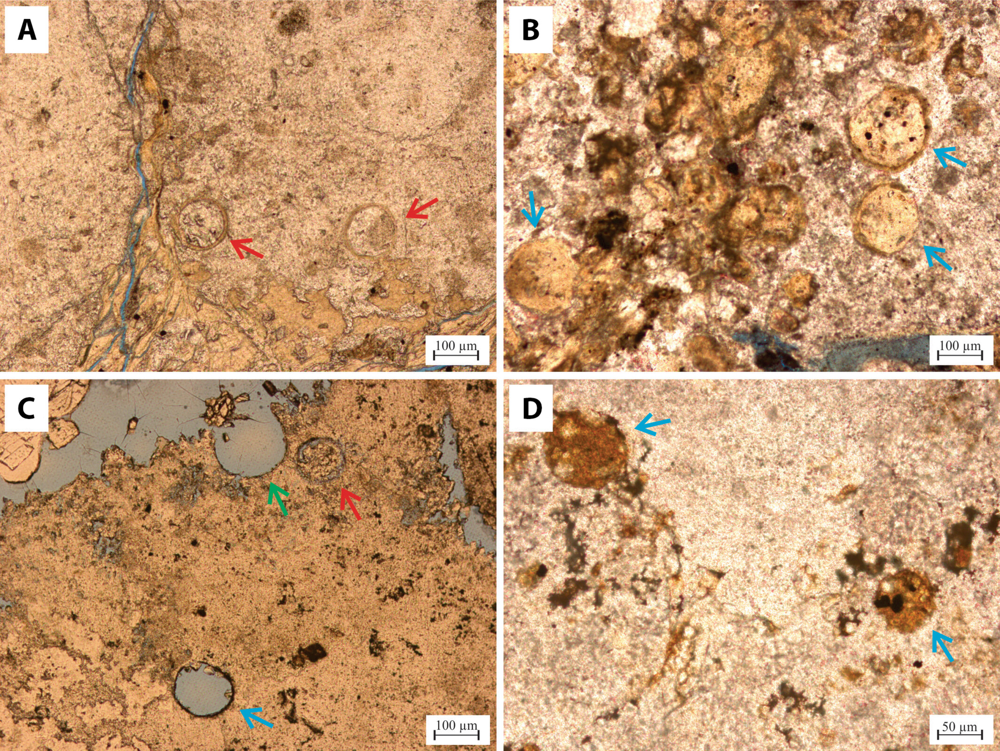

The role of organic matter in Brazilian Pre-Salt carbonates

Resumo em Português
Diversas morfologias de matéria orgânica foram identificadas em carbonatos do Pré-sal brasileiro. Estromatólitos e fácies laminadas contêm camadas orgânicas, filamentos e estruturas arredondadas no interior de estruturas de calcita, como arbustos e esferulitos. Análises por microscopia óptica e de fluorescência, microscopia eletrônica de varredura com espectroscopia de energia dispersiva de raios X (MEV-EDS) e espectrometria de massa iônica indicam a presença de compostos orgânicos em lâminas delgadas. A microscopia de fluorescência evidencia sinal intenso para as porções orgânicas nas lâminas, principalmente no interior de estruturas de calcita e na matriz. O mapeamento elementar por MEV-EDS indica a presença de carbono nas fácies de estromatólito, associado ao cálcio e oxigênio — indicando carbonato — ou isolado de outros elementos, representando conteúdo de carbono nas amostras. A presença de matéria orgânica ao longo e no interior de estruturas de calcita indica uma forte influência microbiana na precipitação dos carbonatos do Pré-sal brasileiro. O objetivo desta pesquisa é demonstrar que a presença de matéria orgânica está relacionada ao processo de precipitação e/ou dissolução de carbonatos. A ocorrência desses compostos orgânicos em fácies distintas levanta a discussão sobre a gênese biótica versus abiótica dos reservatórios lacustres do Pré-sal.